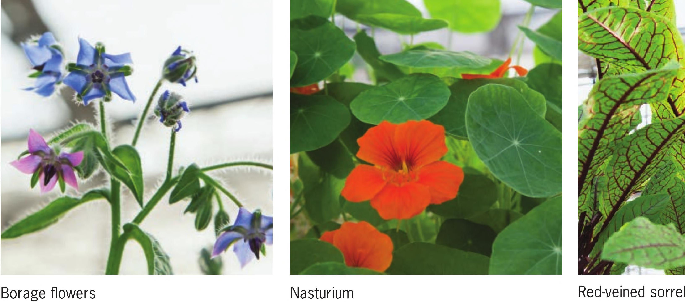

RARE AND UNUSUAL Variety Name Recommended DIY Systems Germination Temperatures Air Temperatures Water Temperatures EC pH B, F, W, N, T, M, FD, A, V 70-75°F 65-75°F 65-75°F 1. 8-2.3 5. 5-6.5 Iceplant Notes: Thick succulent leaves that taste like a mild lettuce. The leaves are covered in trichomes, giving them a sparkly appearance. B, F, W, N, T, M, FD, A, V 65-70°F 65-85°F 65-85°F 1.2-2. 3 5. 5-6.5 Green Sorrel Notes: Naturally grows black roots. The best tasting part of the crop is often the stem. Green sorrel generally has more flavor than red-veined sorrel. Citrusy flavor. Red-Veined B, F, W, N, T, M, FD, A, V 65-70°F 65-85°F 60-80°F 1.2-2. 3 5. 5-6.0 Sorrel Notes: Leaf quality is best when shade grown. Older mature leaves can get leathery. Tangerine Gem B, F, W, N, T, M, FD, A, V 75-80°F 65-85°F 65-85°F 1.2-2. 3 5. 5-6.5 Marigold Notes: Not great tasting, but definitely edible. The plant is beautiful. Borage F, W, N, T, M, FD, A, V 60-75°F 65-85°F Notes: The flowers taste great, just like cucumber. Grow in partial sun. 65-75°F 1.2-2. 3 5. 5-6.0 Wasabi Arugula Mimosa Pudica Nasturtium Jewel's Mix B, F, W, N, T, M, FD, A, V 65-75°F 65-85°F 65-75°F 1 .2-1 .8 Notes: Intense wasabi flavor. Slow-growing crop that has a tendency to flower quickly. Trim off flowers to keep plant producing leaves. Flowers are also edible. Full sun to partial shade. W, M, FD 65-75°F 65-95°F 65-80°F 1.2-1. 8 Notes: Known by many names, including Touch-Me-Not and Sensitive Plant, this plant quickly responds to touch by folding in its leaves. It can be sensitive to overwatering when young but it is tolerant once established. It grows best in warm environments with lots of light. B, F, W, N, T, M, FD, A, V 60-65°F 65-95°F 65-75°F 1.2-2.3 Notes: Great-tasting leaves and flowers. Intense watercress-like flavor. Tastes great with goat cheese. Produces flowers when stressed. Let the plant roots dry out to force flowering. Hibiscus Roselle (Hibiscus sabdariffa) W, T, M, FD 70-80°F 65-95°F 65-75°F Notes: Young flowers have strong citrus/cranberry flavor. Very popular for making tea. Grows well in a chunky, fast-draining coco coir. Full sun, warm weather. Purslane B, F, W, N, T, M, FD, A, V 70-80°F 65-75°F 65-75°F Notes: Fairly easy to grow in hydroponics. Great addition to a hydroponic fairy garden. 1. 2-2.0 1.2-2. 3 5. 5-6.5 5. 5-6.5 5. 5-6.5 5. 5-6.5 5. 5-6.5 (continued) CROP SELECTION CHARTS 181
